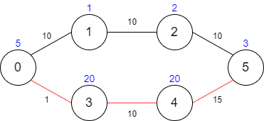

There is a country of n cities numbered from 0 to n - 1 where all the cities are connected by bi-directional roads. The roads are represented as a 2D integer array edges where edges[i] = [xi, yi, timei] denotes a road between cities xi and yi that takes timei minutes to travel. There may be multiple roads of differing travel times connecting the same two cities, but no road connects a city to itself.
Each time you pass through a city, you must pay a passing fee. This is represented as a 0-indexed integer array passingFees of length n where passingFees[j] is the amount of dollars you must pay when you pass through city j.
In the beginning, you are at city 0 and want to reach city n - 1 in maxTime minutes or less. The cost of your journey is the summation of passing fees for each city that you passed through at some moment of your journey (including the source and destination cities).
Given maxTime, edges, and passingFees, return the minimum cost to complete your journey, or -1 if you cannot complete it within maxTime minutes.
Example 1:

Input: maxTime = 30, edges = [[0,1,10],[1,2,10],[2,5,10],[0,3,1],[3,4,10],[4,5,15]], passingFees = [5,1,2,20,20,3] Output: 11 Explanation: The path to take is 0 -> 1 -> 2 -> 5, which takes 30 minutes and has $11 worth of passing fees.
Example 2:

Input: maxTime = 29, edges = [[0,1,10],[1,2,10],[2,5,10],[0,3,1],[3,4,10],[4,5,15]], passingFees = [5,1,2,20,20,3] Output: 48 Explanation: The path to take is 0 -> 3 -> 4 -> 5, which takes 26 minutes and has $48 worth of passing fees. You cannot take path 0 -> 1 -> 2 -> 5 since it would take too long.
Example 3:
Input: maxTime = 25, edges = [[0,1,10],[1,2,10],[2,5,10],[0,3,1],[3,4,10],[4,5,15]], passingFees = [5,1,2,20,20,3] Output: -1 Explanation: There is no way to reach city 5 from city 0 within 25 minutes.
Constraints:
1 <= maxTime <= 1000n == passingFees.length2 <= n <= 1000n - 1 <= edges.length <= 10000 <= xi, yi <= n - 11 <= timei <= 10001 <= passingFees[j] <= 1000- The graph may contain multiple edges between two nodes.
- The graph does not contain self loops.